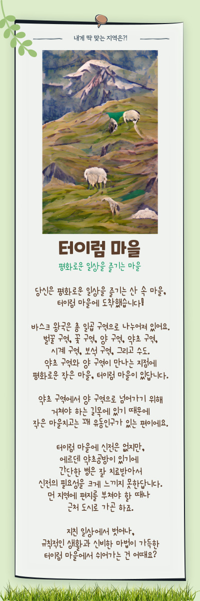

당신은 평화로운 초원 마을에 도착했습니다.

바스크 왕국은 총 일곱 구역으로 나누어져 있어요.
그 중에서 약초와 양 구역이 만나는 지점,
에르덴투야가 평생 살아온 터이럼 마을이 있답니다.
약초 구역에서 양 구역으로 넘어가기 위해
거쳐야 하는 길목에 있기 때문에
작은 마을치고는 그럭저럭 유동인구가 있는 편이에요.
에르덴 가족은 약초공방과 여관을 운영하고 있어요.
터이럼 마을에 신전은 없지만,
에르덴 약초공방이 있기에 간단한 병은 잘 치료받아서
신전의 필요성을 크게 느끼지 못한답니다.
먼 지역에 편지를 부쳐야 할 때나 근처 도시로 가곤 하죠.
평화롭기만 한 이 마을에서 펼쳐질 신비한 이야기가 궁금하다면?